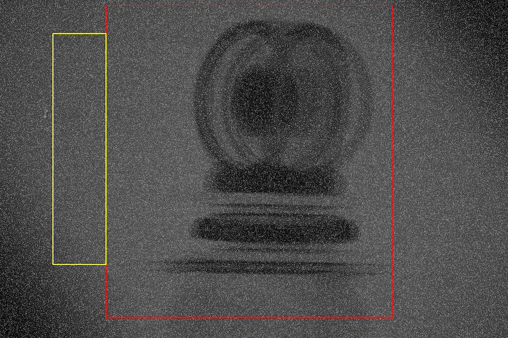

2 중성자 토모그래피 데이터 처리
Rivers (1988) 을 참고한다.
2.1 토모그래피 실험 세팅
- 중성자 영상은 \(xz\) 평면상에서 촬영된다.
- 회전각은 \(\theta\) 이다.
2.2 데이터셋
일반적으로 중성자 토모그래피 데이터는 다음 세가지 종류의 중성자 영상 데이터셋로 구성된다.
- 샘플 영상 : 0 도에서 180도 혹은 360 까지 일정한 회전각으로 샘플을 회전시켜가며 찍은 영상. 이것을 \(I^r_\theta [x, z]\) 라고 표기하기로 하자.
- Dark current 영상 : 백그라운드 처리를 위해 중성자를 막고 측정한 영상. 같은 설정으로 수차례 측정한다. 이것을 \(I^{(i)}_D [x, z]\) 라고 하자.
- White field 영상 : 데이터 규격화를 위해 샘플이 없는 상태에서 중성자를 입사시켜 수차례 촬영하며 이것을 \(I^{(j)}_W[x, z]\) 라고 하자.
영상의 각 픽셀은 2바이트 부호 없는 정수 (UInt16) 타입으로 측정된 중성자 갯수가 저장되며 따라서 0 에서 216-1 = 65535 까지의 중성자 측정 개수를 표현 할 수 있다.
일반적으로 회전축은 \(y\) 방향과 평행하거나 매우 가깝다.
2.3 데이터 처리
2.3.1 영역 선택
보통 두가지 영역을 선택한다.
관심 영역 (Region of interest, ROI) : 측정된 전체 영역은 일반적으로 시료가 찍힌 영역보다 크다. 그리고 데이터 처리는 처리에 사용되는 영역이 늘어날 수록 시간이 오래 걸린다. 따라서 전체 영역가운데 reconstruction 에 사용될 영역을 선택한다. 이 선택된 영역에는 모든 회전각에서의 시료의 영상이 포함되어야 한다.
정규화 영역 (Region of normalization) : 카메라에서 측정된 중성자의 갯수는 중성자 선속(단위 시간당 중성자 갯수) 와 측정 시간의 곱에 비례한다. 여러 이유로 중성자 선속이 각 영상마다 다를 수 있으며, 측정 시간도 다소 차이가 날 수 있다. 이를 보정해 주기 위해 관심 영역이 아닌 모든 회전각에서 시료의 영향을 받지 않는 부분을 정규화 영역으로 선택한다. 시료의 영향을 받지 않으므로 이 영역에서의 중성자 측정 갯수는 측정 시간동안 입사된 중성자의 총량에 비례할 것이다.
따라서 중성자 토모그래피를 측정하는데는 전체 영상을 시료로 꽉 채우기 보다는 일정 부분 빈 공간을 두는 것이 좋다. 그래야지만 괜찮은 정규화 영역을 선택 할 수 있다.
영역 선택을 할 때 보통은 회전각 \(0^\circ\) 와 \(180^\circ\) 의 영상을 겹쳐놓거나, 필요에 따라 여려 영상을 겹쳐 놓고 영역을 선택한다. 아래 사진은 nTomo.jl 에서 영역을 선택한 것이다. 붉은 사각형이 관심 영역의 경계이며, 노란 사각형이 정규화 영역의 경계이다.

2.3.2 파일 읽기
영상 파일은 tif 와 같은 이미지에 대한 비손실 압축 포맷을 사용하거나, 다른 과학적인 데이터 포맷을 사용한다. 데이터셋을 읽고 잡음을 제거한 후 영역을 선택하면 다음의 데이터가 남는다.
샘플 영상 : 샘플에 대한 원본 영상 \(I^r_\theta [x,\,z]\) 에서 관심 영역을 잘라낸 \(I^c_\theta[x,\,z]\) 와 각 회전각에 대한 정규화 영역 전체의 평균값인 \(N_\theta[x,\,z]\) 값.
Dark current 영상 : Dark current 원본의 복수의 영상에서 관심 영역만을 잘라낸 후 픽셀당 평균을 낸 \(I^c_D[x,\,z]\) 과 정규화 영역만을 잘라낸 후 픽셀당 평균을 낸 \(N_D[x,\,z]\)
White field 영상 : 역시 white field 원본의 복수의 영상에서 관심 영역만을 잘라낸 후 픽셀당 평균을 낸 \(I^c_W[x,\,z]\) 과 정규화 영역만을 잘라낸 후 픽셀당 평균을 낸 \(N_W[x,\,z]\)
2.3.3 잡음 제거
보통 Salt & pepper 타입의 노이즈가 많이 발생하며 이를 제거하기 위해 이미지에 중간값 필터링을 수행한다. 노이즈가 심할 경우 중간값 필터의 크기를 크게 하거나 작은 필터로 여러번 수행한다. \(I^r_\theta [x,\,z]\), \(N_\theta[x,\,z]\), \(I^c_D[x,\,z]\), \(N_D[x,\,z]\), \(I^c_W[x,\,z]\), \(N_W[x,\,z]\) 에 각각 잡음 제거 필터링을 수행한다. (데이터 셋을 나타내는 기호는 바꾸지 않겠다.)
2.3.4 샘플 영상 정규화
아래와 같이 \(I_\theta[x,\,z],\, I_D[x,\,z],\, I_W[x,\,z]\) 를 계산한다.
\[ \begin{aligned} I_\theta [x,\,z] & = I^c_\theta[x,\,z] /\left(\sum_{x,\,y} N_\theta[x,\,z]\right),\qquad ; \theta = 0,\ldots \\ I_D[x,\,z] &= I^c_D[x,\,z] /\left(\sum_{x,\,z} N_D[x,\,z]\right),\\ I_W[x,\,z] &= I^c_W[x,\,z] /\left(\sum_{x,\,z} N_W[x,\,z]\right), \end{aligned} \]
2.3.5 사이노그램
고정된 \(y\) 에 대해 \(\theta,\,x\) 값을 조합하여 사이노드램(sinogram) 을 얻는다. \[ S_z [\theta, x]= - \log \left(\dfrac{I_\theta[x,\,z] - I_D[x,\,z]}{I_W[x,\,z]-I_D[x,\,z]}\right) \]
2.3.6 회전중심 찾기
2.3.7 링/스트립 아티팩트 제거
Vo, Atwood, and Drakopoulos (2018) 에 따르면 링/스트립 아티팩트 제거에는 크게 두가지 범주가 있다.
- Real space method
- 푸리에 변환 기반 method
이 방법들은 모두 두가지 단점이 존재한다.
- 시노그램에 high frequency edgy 가 있을 경우 추가적인 strip 아티팩트가 발생한다.
- 시노그램을 과도하게 수정할 경우 회전 중심 근처에 void 가 생길 수 있다(void-center artifacts).